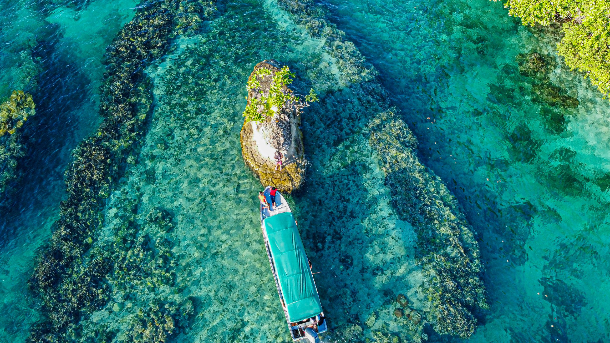
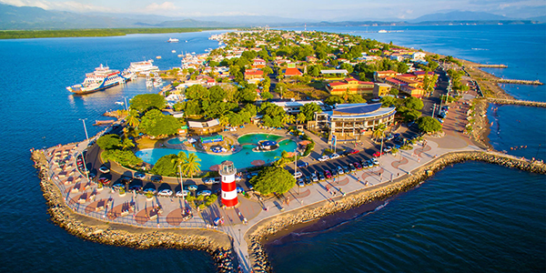
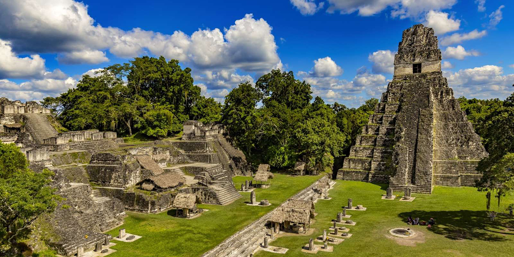

América Central
|
Panamá El país mas avanzado de Centramerica: Un paraíso tropical precioso y exótico.  |
Costa Rica Posee un sistema de montañas que ofrecen una amplia gama de ecosistemas.  |
Guatemala Conocido por su territorio inigualable con herencia colonial y playas exóticas del Caribe y Pacífico  |